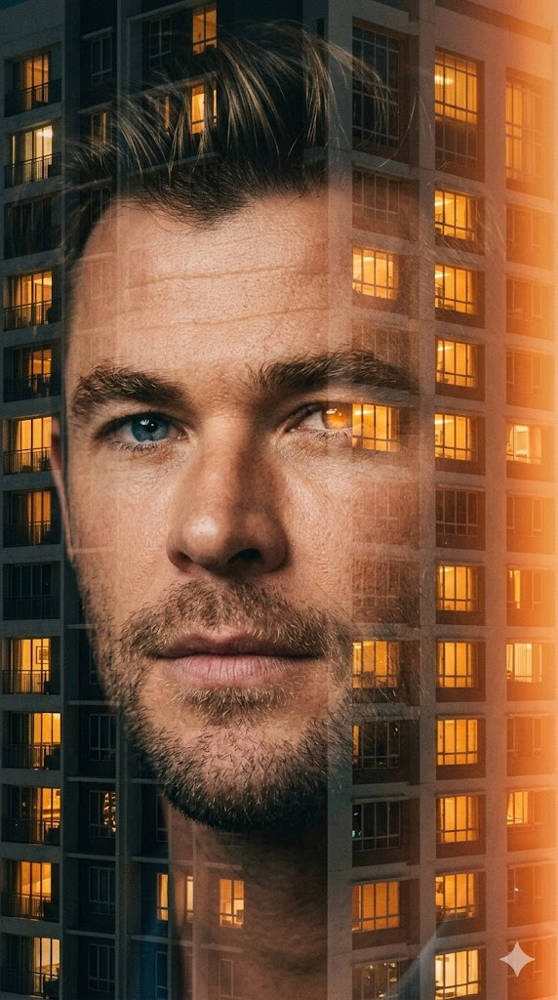
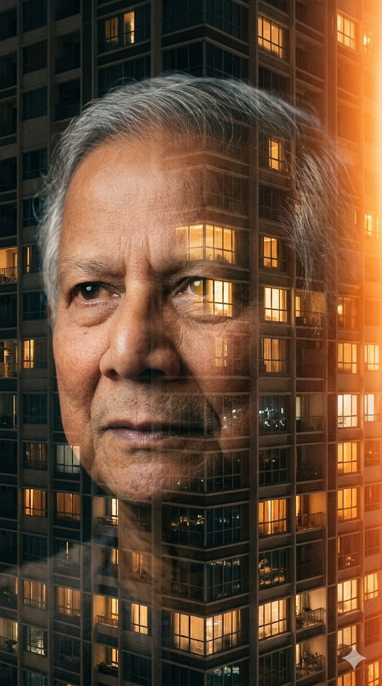

"How to Create a Cinematic Double Exposure Portrait with Urban Architecture" | Brainloom
Generate a hauntingly beautiful double exposure portrait where your face merges with a night-time cityscape. This prompt focuses on perfect facial identity, emotional depth, and analog film aesthetics with warm sodium-vapor lighting.
Generated Images


Prompt Explanation
The Prompt
A cinematic double exposure portrait the soft, contemplative face of me with exact same facial and physical identity from the uploaded image layered seamlessly over a high-rise apartment building at night. my eye aligns with one lit window, creating a surreal point of convergence. Shot with a 50mm lens, perspective remains neutral and human, while composition merges intimacy with structural grid. The frame balances facial softness against rigid architecture, allowing emotional depth to unfold through symmetry and glow. Light spills from each window with a sodium-vapor warmth an amber haze filling the frame with urban melancholy. Diffuse glow wraps around building edges, softening hard lines into memory. Environmental light echoes off glass panes, while shadows pool subtly along facial contours. The atmosphere hums with cinematic quiet, a moment held between two realities. Surface realism builds through analog imperfections: microfilm grain dances across shadow, soft dust haze veils sharpness, and faint lens bloom blurs the brightest points. The image feels tactile, lived-in, haunted by its own light. The urban structure breathes gently through her expression, forming an emotional map of solitude. Skin realism is present but softened by light: subsurface scattering adds glow beneath the cheek and eyelid, while lip contour dissolves into skin with natural tenderness. No harsh lines only gradients of feeling. Final image feels suspended not a photo, not a memory, but a layered architectural emotion. Genesis Prompt + Styling Overlay → Use Genesis Prompt above → Add overlay: "Light spills from the edge orange bloom bleeds into frame with overexposed softness. It glows with analog memory. --ar 9:16 --raw
How to Use This Prompt
This prompt requires a careful, multi-step approach to achieve its sophisticated artistic vision. Start by uploading your clearest, most expressive reference photo to your AI image generator. A photo with soft, even lighting on your face works best because it gives the AI clean data to work with for the double exposure effect. Copy the image link and paste it at the very beginning of your prompt. Then, add the complete main prompt text exactly as provided. The key here is understanding that this prompt contains two distinct parts: the 'Genesis Prompt' which builds the core double exposure concept, and the 'Styling Overlay' which adds specific analog film characteristics. When you run the first generation, the AI will attempt to merge your face with the high-rise building, aligning an eye with a lit window as instructed. Review the results carefully. The magic is in the details—look for that 'surreal point of convergence' where your eye and the window meet. If the double exposure effect is too subtle or too aggressive, you may need to adjust. For the second stage, take the best result from your first generation and use it as a new image reference, or run a variation while adding the overlay text: 'Light spills from the edge orange bloom bleeds into frame with overexposed softness. It glows with analog memory.' The --ar 9:16 sets the vertical aspect ratio, and --raw tells the AI to apply less post-processing, preserving more of the analog texture and grain you want. This two-pass approach—first nailing the composition and identity, then overlaying the film aesthetic—gives you maximum control over the final artistic output.
Why This Prompt Works
This prompt is a masterpiece of atmospheric instruction because it doesn't just describe a scene—it evokes a feeling and provides technical parameters to achieve it. The double exposure concept is introduced immediately, but the prompt quickly moves to the critical detail: 'my eye aligns with one lit window, creating a surreal point of convergence.' This single instruction gives the AI a compositional anchor, a reason for the double exposure to exist beyond mere visual trickery. It creates meaning. The prompt then builds a complete sensory world through carefully chosen language. 'Sodium-vapor warmth' and 'amber haze' aren't just color descriptions—they reference specific types of urban lighting that carry cultural and emotional weight, suggesting late nights, city loneliness, and cinematic noir traditions. The instruction to include 'analog imperfections'—microfilm grain, dust haze, lens bloom—is particularly sophisticated. It tells the AI to deliberately introduce 'flaws' that our eyes read as authenticity. In an era of perfect digital images, these imperfections signal artistry and tactility. The prompt also demonstrates deep understanding of photographic and AI terminology. 'Subsurface scattering' is a technical term for how light penetrates skin and creates a natural glow—including this tells the AI to render flesh realistically rather than as a flat surface. 'No harsh lines only gradients of feeling' is poetic but also practical; it instructs the AI to use soft transitions rather than hard edges, which is essential for a convincing double exposure. The final instruction to use --raw is crucial—it prevents the AI from smoothing out the very textures the prompt works so hard to request. Every word builds toward a unified artistic vision: a portrait that feels less like a photograph and more like a layered emotional experience.
Prompt Variations
- {'variation': "Replace the high-rise apartment building with 'an ancient library filled with towering shelves and warm lamplight' and align your eye with 'a single glowing reading lamp.' This transforms the urban melancholy into intellectual solitude, perfect for author portraits or bookish artistic concepts."}
- {'variation': "Change the lighting from sodium-vapor warmth to 'cool blue moonlight with silver highlights' and the mood to 'peaceful wonder rather than melancholy.' This variation shifts the emotional register from lonely to dreamy, ideal for fantasy or ethereal portrait series."}
- {'variation': "Modify the double exposure subject to 'a dense autumn forest with light filtering through golden leaves' and align your eye with 'a single beam of sunlight breaking through the canopy.' This creates a nature-meets-humanity concept with a warmer, more hopeful emotional palette."}
Frequently Asked Questions
-
What does '--raw' do and why is it included?The --raw parameter in Midjourney tells the AI to apply less of its default aesthetic smoothing and beautification. This preserves more texture, grain, and natural imperfections—exactly what this prompt needs to achieve its analog film aesthetic. Without it, the image might look too polished and lose its 'lived-in' quality.
-
How do I get the eye alignment with the window to work consistently?Eye alignment is challenging because the AI must simultaneously render your face and the building. Using a reference photo where your eyes are open and clearly visible helps. If alignment fails, you can try adding 'eye exactly aligned with central lit window' more prominently in the prompt, or generate multiple variations and select the closest match for further refinement.
-
What is 'subsurface scattering' and why does it matter for skin realism?Subsurface scattering is the way light penetrates translucent surfaces like skin and scatters beneath the surface before exiting. In real life, this creates a soft glow, particularly around thin skin like eyelids and cheeks. Including this term tells the AI to render skin with this natural luminosity rather than as an opaque, flat surface, dramatically increasing realism.
Related Prompts

Ai Prompt Man Sleeping On Bananas
Turn a simple photo into a funny and surreal AI image: a man sleeping on top of a giant pile of bananas. Some are pee...
View Prompt
Luxury Street Portrait Ai Prompt Translucent Ghost Demon Aura
AI prompt for an ultra-realistic luxury portrait on a city sidewalk. You wear a black pinstripe outfit, with a transl...
View Prompt
Dreamy Blurred Portrait Ai Prompt Motion Effect
An AI prompt for creating a dreamy, artistic portrait with intentional motion blur and a teal color grade. Uses your ...
View Prompt
Ai Prompt Double Exposure Superhero Poster Art
Create a dramatic AI poster of a superhero using a double-exposure effect. The right side of the face is realistic an...
View Prompt
South Indian Cinematic Movie Poster Prompt
Generate a dramatic South Indian cinema-style movie poster using your photo. Creates an epic composition with a close...
View Prompt
Renaissance Painting Soccer Motion Blur Ai Prompt
This prompt creates a Renaissance painting style high-speed motion blur photo of a soccer player mid-kick. Features d...
View Prompt